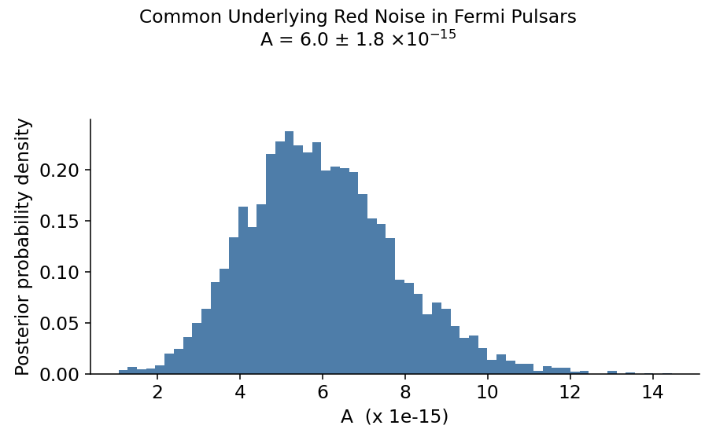
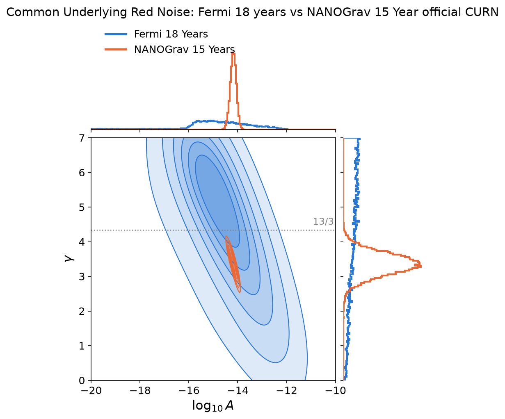

Gravitational waves are a form of energy emitted when massive things go around each other. One of the major sources of these are supermassive blackholes orbiting each other on a timescale of ~a few years. The neat thing is these dancing black holes cause you & me and the Earth itself to stretch & squeeze as they dance.
Throughout my academic career, I always remember the detection of these gravitational waves from supermassive black holes being the mythical five to ten years away.
That changed in 2023 when NANOGrav (the North American NanoHertz Observatory for Gravitational Waves) put out a tentative detection.
Using just gamma-ray data alone, the team at NASA's Gamma-ray seeing Fermi Large Area Telescope put out a paper where they were just ~a factor of two or so in sensitivity of being able to see the gravitational waves if they were as bright as NANOGrav sees.
It has been five more years since Fermi published this limit, and their data is public. Who could resist taking a new look?
Data Processing
I downloaded ~18 years of data (the full mission to date) for the Fermi team's listed nine best pulsars.
For each pulsar I took the Fermi photons from a 3-degree circle around it, and assigned per-photon probabilities the photons were from the pulsar using gtsrcprob.
After that, I started extending the timing solutions using Shoogle for the most likely photons & extracted three pulse times of arrival per year per pulsar, using a two dimensional phase-energy pulse profile template.
With these pulse times of arrival in hand, I tried fitting the residuals, that is the pulse times of arrival minus the best fit timing solution jointly to see if we can find some Gravitational Waves.
If the Gravitational Waves are real & shaking the Earth, the first thing we should be able to see in this data is a Common Underlying Red Noise, a signal that shows up in every pulsar's timing at once, rather than being unique to each one.
This isn't the smoking gun signal of seeing the predicted correlation pattern of a Hellings-Down curve (the predicted correlation pattern of how strongly two pulsars' timing residuals should agree with each other, based on how far apart they sit in the sky — the actual fingerprint that would prove it's gravitational waves), but it is a promising hint.
I used the method described in Gundersen et al. (2026) to see what I could find.
To start with, I fixed the spectrum of the noise curve to γ = 13/3, the slope you would expect if this Common Underlying Red Noise really is gravitational waves.
Here's what the data shows under this assumption:

For reference, the NANOGrav detection is $A = 2.4^{+0.7}_{-0.6}\times 10^{-15}$.
With that proof of concept done, let's see what happens if we let $\gamma$ be free.
My Fermi result is plotted in blue, and NANOGrav's published posterior in orange.

Nice! They are totally consistent!
The shape of the contours also makes sense in that with Fermi we are only getting ~a few data points a year so constraining $\gamma$ is going to be hard.
For a relatively quick run through of the data, I am pretty pleased that we get this close!
I remain amazed that 5-10 years away has finally come!
Thanks to the Fermi team for keeping all their data public. Pulling a weak, shared signal out of noisy real-world data is fun!
NB: This is only a first pass at the data -- take it with a grain of salt.